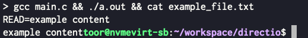

참고한 것들
TL;DR
Direct IO?
- … 가 뭔지는 MMAP 글 에서 확인하자.
Header 정보
HEADER FUNCTION fcntl.hopenstdlib.hposix_memalignunistd.hwrite
#define _GNU_SOURCE
#include <stdio.h>
#include <fcntl.h>
#include <stdlib.h>
#include <unistd.h>
#include <string.h>
#define F_BLOCK_SIZE (512)
#define F_BUF_SIZE (F_BLOCK_SIZE * 1)
int d_write(char *filename, char *content) {
int fd = open(filename, O_WRONLY | O_CREAT | O_TRUNC | O_DIRECT,
0644);
if (fd == -1) {
return 1;
}
char *buf;
posix_memalign((void**)&buf, F_BLOCK_SIZE, F_BUF_SIZE);
memset(buf, 0, F_BUF_SIZE);
memcpy(buf, content, strlen(content));
if (write(fd, buf, F_BUF_SIZE) == -1) {
free(buf);
close(fd);
return 1;
}
if (fsync(fd) == -1) {
free(buf);
close(fd);
return 1;
}
free(buf);
close(fd);
return 0;
}
int d_read(char *filename) {
int fd = open(filename, O_RDONLY | O_DIRECT, 0644);
if (fd == -1) {
return 1;
}
char *buf;
posix_memalign((void**)&buf, F_BLOCK_SIZE, F_BUF_SIZE);
memset(buf, 0, F_BUF_SIZE);
if (read(fd, buf, F_BUF_SIZE) == -1) {
free(buf);
close(fd);
return 1;
}
printf("READ=%s\n", buf);
free(buf);
close(fd);
return 0;
}
int main() {
char *filename = "example_file.txt";
char *content = "example content";
d_write(filename, content);
d_read(filename);
}
주의 (참고) 사항
기타 함수 참고
O_DIRECT
O_DIRECT는 Linux extension 이다. darwin (Mac OS) 에서는 안통한다 (뿅).- 컴파일할 때
_GNU_SOURCE옵션이 있어야 한다.- 이건
#include <fcntl.h>전에#define _GNU_SOURCE를 명시하거나 - GCC option 으로
-D_GNU_SOURCE를 적어주면 된다.
- 이건
posix_memalign()
- Direct IO 를 하려면 buffer 가 align 되어 있어야 한다.
- 구체적인 조건은 (뿅):
- IO size 가 512byte 의 배수여야 한다.
- File offset 도 512byte 의 배수여야 한다.
- Memory 의 buffer 는 512byte 에 align 되어 있어야 한다.
- 이를 위해서 저
posix_memalign()를 사용하는 것.- 이놈은 malloc 처럼 동적할당을 해주되, 해당 memory 공간이 align 되어 있도록 할당해준다.
- 이놈의 함수 선언은 요래 돼있다.
int posix_memalign(void **_memptr_, size_t _alignment_, size_t _size_);- 여기서 주목할 것은
_alignment_와_size_이다._alignment_: 이놈이 어떻게 align 할 것인지에 대한 인자이다. Direct IO 를 위해서는512를 넣어줘야 한다._size_: 이놈이 buffer size 를 얼마로 할 것이냐에 대한 인자이다. Direct IO 를 위해서는512의 배수를 넣어줘야 한다.